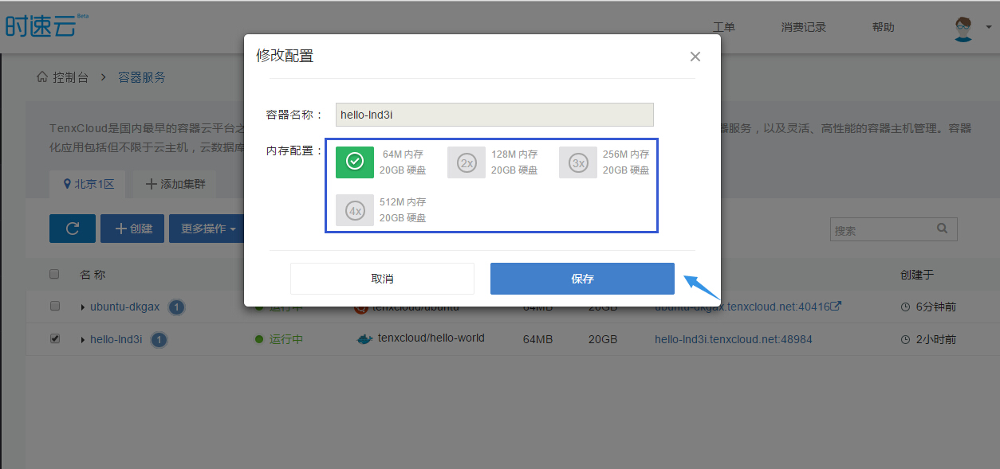

时速云帮助文档
1.
平台介绍
2.
新手指引
2.3.
了解时速云
2.4.
什么是容器服务
2.5.
什么是微服务
2.6.
时速云的优势
3.
容器服务
3.4.
创建第一个Hello World服务
3.5.
绑定域名
3.6.
停止/启动/重启/删除容器
3.7.
修改容器配置
4.
高级服务 - 数据库与缓存
4.5.
Mongodb 集群搭建
5.
代码构建
5.6.
新建一个项目
5.6.7.
添加源代码
5.6.8.
填写项目信息
5.7.
管理我的项目
5.7.8.
构建项目
5.7.9.
如何选择构建节点
5.7.10.
部署项目
5.7.11.
管理镜像
5.7.12.
其他操作
5.8.
使用 tce 客户端
5.8.9.
命令详解
5.8.10.
快速构建Node.js镜像
5.8.11.
快速构建Java镜像
5.8.12.
快速构建golang镜像
5.9.
FAQ
5.9.10.
tce push镜像时出错怎么办？
5.9.11.
时速云支持私有代码仓库构建吗？
6.
镜像服务
6.7.
浏览镜像
6.8.
修改镜像配置
7.
私有集群
7.8.
为什么使用"私有集群"
7.9.
添加一个集群
7.10.
添加一个主机
7.11.
部署应用到私有集群
7.12.
如何卸载Agent
7.13.
FAQ
7.13.14.
如何搭建自己的路由和子网？
7.13.15.
是否可以添加本地虚拟机？
7.13.16.
私有集群容器一直处于"启动中"
7.13.17.
如何设置防火墙
7.13.18.
如何在IaaS平台上创建AccessKeyId和SecretAccessKey
8.
服务编排
8.9.
Pod 编排
8.10.
Stack 编排
9.
开放 API
9.10.
获取 API token
9.11.
使用详细说明
9.11.12.
API 服务状态
9.11.13.
用户信息
9.11.14.
服务区信息
9.11.15.
服务
9.11.16.
服务实例
9.12.
通过 swagger UI 查看
10.
常见问题
10.11.
常见问题
10.12.
如何编写Dockerfile
10.13.
如何部署代码
本书使用 GitBook 发布
A
A
衬线体
无衬线体
白色
棕褐色
夜间
分享到 Twitter
分享到 Google
分享到 Facebook
分享到 Weibo
分享到 Instapaper
TenxCloud 时速云
修改容器配置
在容器列表页，勾选容器后，我们可以
修改容器配置
：

目前支持修改内存配置，后续会增加实例数量修改等。
注：
修改容器配置
不可以批量操作，正在初始化的容器不能进行
修改容器配置
操作
如果您的容器是操作系统（ubuntu、debian、centos），
修改容器配置
后数据会丢失